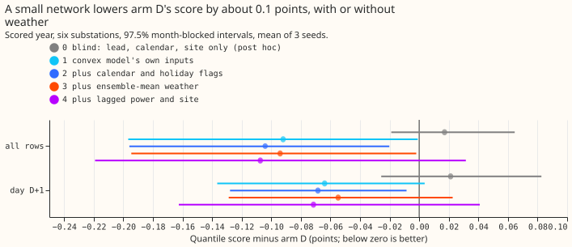
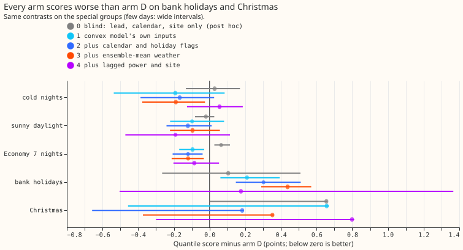
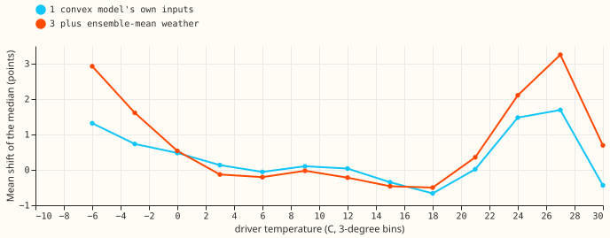
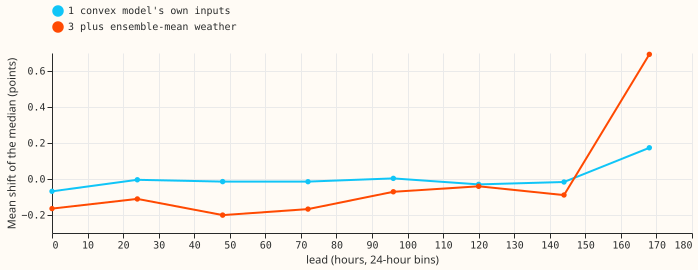
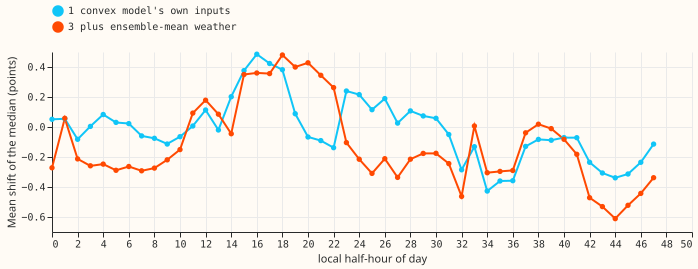
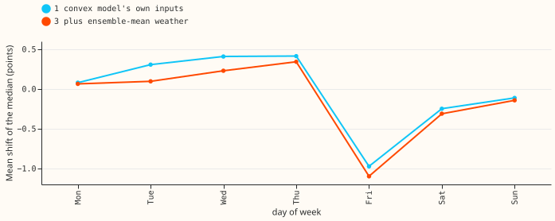

Experiment 201: a small neural network that corrects the convex demand model's forecast
A small neural network that reads the convex demand model's forecast lowers that forecast's quantile score by about 0.09 points of effective capacity (3%), and adding weather, calendar, or lagged power did not help further. A negative contrast means a lower (better) score. Arm D is the best-guess forecast from experiment 155: a convex demand model whose recent errors feed a Kalman filter, with a winter night offset and a 14-day error profile (recipe R) subtracted. We trained a neural network with two hidden layers of 64 units to shift arm D's median and rescale the width of its uncertainty bands. Each arm gives the neural network more inputs: arm 1 the demand model's own inputs, arm 2 adds calendar and holiday flags, arm 3 adds ensemble-mean weather, and arm 4 adds power lagged by whole days. The neural network never saw the scored year, 2025-07 to 2026-06, which covers six substations. Experiment 142 gave a network the residual history only.
Most of the gain is a recalibration of arm D's own output, the useful lead is a lift of up to 3 points in the median below -3 °C and above 24 °C, and holidays get worse. Arms 1 to 4 each score about 0.09 to 0.11 points below arm D. A neural network given calendar, lead, and site but no forecast or weather (arm 0) scored +0.017 against arm D, which is no gain. A neural network given only arm D's forecast, lead, and time of day (arm 6) scored -0.086. The gain therefore comes from re-reading arm D's own output. The neural network mostly raises the median on hot days and very cold days, which suggests the convex demand model lacks a temperature term.
The pre-registered prediction failed on both conditions. The interval of arm 3 or arm 4 was not wholly below -0.02 points, and bank holidays and Christmas worsened by more than 0.05 points. The Christmas group is one month (2025-12, plus 2 days of 2026-01), so its interval is not informative.






Results
- Arms and inputs. Arm 1 has 19 input columns, arm 2 28, arm 3 32, and arm 4 41, so the arms differ in their number of input columns. Arm 0 (blind: lead, calendar, site; 25 columns), arm 5 (arm 1 without the filter's level and anomaly), and arm 6 (arm 1 without the temperature, solar, and darkness terms) are post hoc. Network: two hidden layers of 64, zero-initialised output, weight decay 1e-3, early stopping on every fourth month of the pool, pinball loss over 11 quantiles, 3 seeds.
- Row set. Training uses every row before 2025-07: past-weather rows from 2020-01 to 2024-06, plus ensemble-era rows of experiment 155's tuning and replicate months. Scoring uses the 561,363 scored-year rows (one per substation, forecast issue time, and valid time) at the six substations D5, D9, D10, D11, D14, and D16, outside the hand-filtered switching events. Arm D rows are experiment 155's stored forecasts, and its five-substation score reproduces experiment 155's 2.756 exactly.
- Scores over leads 0.5 to 168 h (points; arm D 2.691). Arm 0 2.709; arm 1 2.599; arm 2 2.587; arm 3 2.597; arm 4 2.584; arm 5 2.621; arm 6 2.606.
- Contrast against arm D (97.5% month-blocked interval). Arm 1 -0.092 (-0.197 to -0.001); arm 2 -0.104 (-0.196 to -0.020); arm 3 -0.094 (-0.195 to -0.002); arm 4 -0.107 (-0.219 to +0.032); arm 0 +0.017 (-0.019 to +0.065); arm 5 -0.070 (-0.162 to +0.005); arm 6 -0.086 (-0.173 to -0.031). At day D+1: arm 1 -0.064, arm 3 -0.055, arm 4 -0.071.
- Special groups, arm 3 minus arm D. Cold nights -0.189; sunny daylight -0.096; Economy 7 nights -0.120; bank holidays +0.437 (+0.290 to +0.570); Christmas +0.352 (-0.374 to +0.360, from one month). The bank-holiday and Christmas groups hold 19 days from one year (9 at Christmas).
- Tail calibration, arm D then arm 3. Coverage of q01 2.3% then 2.1%; q05 7.1% then 7.3%; q95 94.7% then 93.7%; q99 98.2% then 97.8%. Pinball at q95 1.452 then 1.391; at q99 0.445 then 0.441. Arm 4's q95 coverage fell to 90.3%.
- Known-answer gate (passed). On the scored year the network recovered 71% of an injected interaction (cold-evening effect up to 3 points plus a 1-point Saturday-evening shift): 24% of the cold-evening part and 76% of the Saturday part. On rows with no injection the network scored 0.005 points worse than the same network trained on the real power. Post hoc: the pre-registered wording measured change against arm D, which cannot work because the network also improves arm D (-0.09), so the recovery and the harm are measured against a control network trained on the real power.
- What the network learned. The median shift is 0 to 0.5 points between 0 and 21 °C and rises to +1.7 (arm 1) or +3.3 (arm 3) points at 24 to 27 °C and to +1.3 or +2.9 at -6 °C (figure 3); it is near zero at every lead except the last day (figure 4).
Checks
-
Difference from experiment 200's blind arm. The pooled correction head of experiment 200 reports that a head with its error and Kalman-state inputs zeroed keeps most of its gain (-0.100 of -0.125). Our arm 0 is blinder: it has no input from arm D at all, so it gains nothing (+0.017). The two agree where they overlap: arm 6, which keeps arm D's mean, bands, lead, and time of day but not the weather, scores -0.086, and arm 5, which drops the filter state, scores -0.070. The gain therefore comes from a function of arm D's own mean and the calendar, not from reading its recent errors.
-
Median minus mean, per site. Arm D's
q50equals its mean exactly at all six substations (0.000), so rescaling the bands cannot move the median. - Error of the median beside the quantile score. The mean absolute error of the median is 4.623 for arm D and 4.581 (arm 1), 4.535 (arm 2), 4.554 (arm 3), 4.476 (arm 4), the same direction as the quantile score.
- Leave one substation out. Every leave-one-out contrast for arms 1 to 4 stays between -0.047 and -0.147; D16 carries the most (-0.32 alone).
- Audit triggers. The
ml-experimentskill lists seven conditions that call for an audit. Trigger 2 (a result contradicts its own prediction) fired (arms 1 and 2 were predicted to gain 0.00 to 0.01 and gained about 0.09 to 0.10); arms 0, 5, and 6 test the explanation and support it (see above), so no audit was run. Triggers 1, 3, 4, and 5 did not fire. Trigger 6 was not checked against a sister experiment.
Caveats and what to try next
- Early-era rows have smaller weather error than live rows. The 2020-01 to 2024-06 training rows use ERA5 (the ECMWF reanalysis) and CAMS (the Copernicus atmosphere service) as the weather, so a neural network trained on them may under-correct. The scored year uses ensemble-mean weather only.
- One scored year and six substations. The gain rests on 12 months, and D16 gives the largest share of it. Sixteen Primaries were planned; the other ten lack a pinned solar capacity and ensemble frames, so they were not built.
- The gain is concentrated in three substations. Arm 1 scores -0.162 at D5, -0.091 at D14, and -0.320 at D16, but +0.024 at D10 and +0.028 at D9; arm 3 is +0.038 at D9. Arm 4's q99 coverage is 96.0% and its q99 pinball is 0.511 against arm D's 0.445.
- The gate's weather part was weak. The cold-evening effect was injected from the observed temperature while the network sees the ensemble-mean temperature, and only 24% of that part was recovered; the pass rests on the Saturday part (76%). The statement that weather adds nothing is therefore weaker than the calendar and lag statements.
- Two small leaks and a clip. 4,320 training rows from the last replicate run have valid times inside the scored year (targets only, 0.8% of valid times). The spread tables are refitted on the odd months of the training period, so training bands are slightly better calibrated than the scored year's. Network inputs are clipped at 5 standard deviations because a lagged-power spike of 140 points sent arm 4 far outside the data in a first run.
- No refit through the scored year, and one seed pool. The network is trained once on rows before 2025-07. A weekly refit, as production would use, was not tested.
- Wind, humidity, and school holidays were not available in the stored arrays, so arm 3 has temperature and shortwave only, and the calendar has no school-holiday flag.
- A candidate follow-up is extra heating and cooling terms in the convex demand model. The prediction that could fail: adding a cooling hinge above 21 °C and a steeper heating hinge below 0 °C to arm D lowers its score by at least 0.05 points without a network.